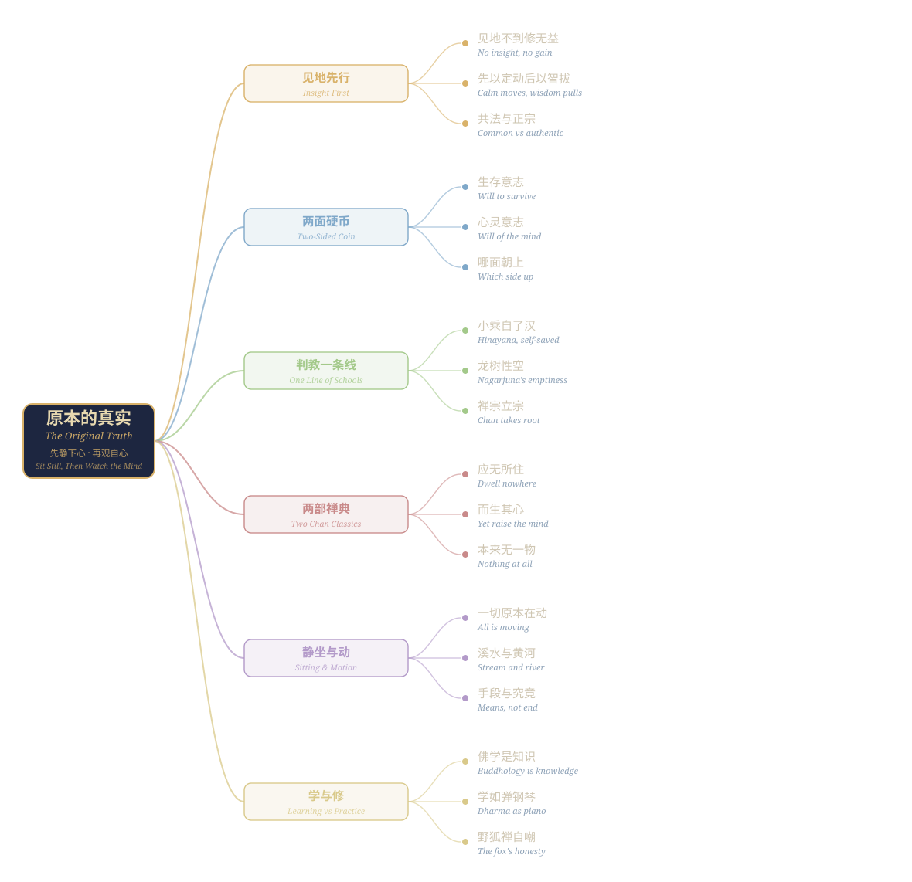

原本的真实
〇 · 书籍信息
基本信息
| 书名 | 《原本的真实》——书名即全书判词：佛法要抵达的「原本的真实」，不在经卷堆里，在每个人被生存意志盖住的心灵里——先静下心，再观自心 |
|---|---|
| 作者 | 见君：民间讲者——立场是「学佛法不同于学习佛学」：先讲见地再谈修证；结尾自嘲「我这小册子也实在是个文字禅、野狐禅」，落款 1996 年 2 月 |
| 结构 | 四部分：人生漫谈（生存与生活 / 思维的困惑 / 佛学发展概况）→ 三部真常系经典（圆觉经 / 楞伽经 / 楞严经）→ 两部禅宗经典（金刚经 / 坛经）→ 静坐、行为与闲谈——先聊人生，再讲经典，最后落到打坐 |
| 立场 | 开篇的定调：「先以定动，后以智拔」——静与定是各道之共法，是手段不是目的；「静而观心为真佛法也，其余为仿佛法也」 |
| 一句话 | 见地先行，修证在后——先想明白为什么学佛法，再谈腿怎么盘、气怎么走；一切原本在动，静坐体验的恰恰是运动中的永恒。 |
一 · 核心主题总览
这本漫谈录里的四组母题：① 生存意志与心灵意志
第一部分把人生拆成两面硬币：人过不惑之前，主要以「五分硬币」那面朝上在生存；过不惑之后，以「国徽」那面朝上在生活——「不用研究，一拿在手里，是人，是五分硬币，而不是动物或画，这个真理则是绝对真理」——硬币磨得掉图案，磨不掉那一面的存在；「心灵意志是建立在生存意志之上的，这也是绝对的真理」。
② 思维的困惑
第二章先划界：「逻辑思维，是科学的、理性的产物」——它来自感性认识，感性又来自意识与潜意识（潜意识关乎生存本能：无意中碰到火炉，手先离开，然后才意识到危险）——逻辑能解释世界，却抵达不了「原本的真实」；真经是另一条路：「真经，是观自心，去五蕴，以明心见性」。
③ 判教一条线
第三章给出佛学地图：小乘「其果位低，只是罗汉；其见地低，只是四圣谛八正道；其修的方法低，只是四禅八定……自了汉也」；龙树的性空把小乘「空心静坐」的境界之空，升为思想性的空；真常系三部经（圆觉「一真法界」看净、楞伽是简化了的唯识、楞严讲五十阴魔）；最后《金刚经》印心、《坛经》立宗——「中国的佛教：禅宗」。
④ 静坐与魔镜
第四部分回应一切对静坐的怀疑：「不论体育运动还是静坐，一切原本在动」——「涓涓的流水才叫溪，滔滔的浪正是在证明黄河运动中的永恒」——「这种绝对的动力正是我们静坐要体验到的真理」；而五十阴魔「是对所有修行人、各种法门讲的」——那是一面照妖镜，照的是修行路上的自己。
二 · 第一段 静下心来 —— 见地与硬币—— 六祖 · 慧明 · 两面硬币 ——
先以定动，后以智拔
开篇的「静下心来」不是客套：「凡是学习佛法的都知道，入静啊！入静干什么？入定啊！如此就是学佛了么？有的人一定二十几年，道的边儿一点儿没见着」——静与定是为正确的思维做的准备和基础，「它是手段，不是目的」；儒家以入静为先而后写文章，道家以入静为先而后气走周天，医家以入静为先而后望闻问诊，武家以入静为先而后发丹田之力，佛家以入静为先而后细细观心——「此为佛法之正宗。静而观心为真佛法也，其余为仿佛法也」。所以作者先不教打坐，先聊人生：「咱们从人生慢慢聊起来，只希望哪句话相应了、对机了，能与诸位有所益」。
◆ 语言学习 · 概念 · 共法
| 共法 | 各道通用的基本功：静与定——儒家道家医家武家佛家都要先入静 |
|---|---|
| 手段不是目的 | 入定不为入定：为的是正确思维与观心 |
| 见地 | 为什么要学？佛法讲什么？学的目的是什么？——四个前置问题 |
| 先以定动，后以智拔 | 以定指导动，以智慧生活于世间——超然拔群的觉者路径 |
句型 ｜ 「静而观心为真佛法也，其余为仿佛法也。」——全书的第一道分野：各家的入静都是共法，分野在静下来之后干什么——观心的才算真佛法：手段相同，方向见高下。
五分硬币与国徽
第一章把人生拆成「生存」与「生活」两层：「人人都懂得要生存，但很少有人真正懂得生活」——生存是物质有机体的真实存在，带着好生恶死与占有物质的本能；生活是高于生存的、人类独有的。然后是那个贯穿全书的硬币比喻：人于而立之年以前，主要以五分那面朝上在生存；人过不惑，是以国徽那面朝上在生活——「但并不存在没有心灵意志的纯生存意志」——有人试图磨掉国徽那面来证明自己正确，「但磨得掉的只是图案！那一面的意义与真实存在」磨不掉——「心灵意志是建立在生存意志之上的，这也是绝对的真理」：硬币的两面谁也离不开谁，人生的高级在于知道自己哪面朝上。
◆ 语言学习 · 概念 · 两面硬币
| 生存意志 | 五分那面：好生恶死、占有物质——动植物皆有 |
|---|---|
| 心灵意志 | 国徽那面：人类独有——过不惑以后朝上的一面 |
| 贪婪出口 | 生存意志走向长生不老与无限占有——它需要被看见而非否认 |
| 哪面朝上 | 人生的姿态学：不是消灭另一面，是知道此刻谁朝上 |
习语 ｜ 「人人都懂得要生存，但很少有人真正懂得生活。」——第一章的判词：生存是本能给的，生活要自己学——把占有当生活，是把五分那面磨成了唯一的正面。
三 · 第二段 思维的困惑 —— 逻辑与禅—— 潜意识 · 观自心 · 去五蕴 ——
逻辑思维的边界
第二章从「逻辑思维是为谁服务的」发问：「逻辑思维，是科学的、理性的产物。它来自人们生活中的感性认识。感性认识又是来自每个人自己的意识和潜意识」——潜意识藏得太深无从下手，只知它直接关乎生存本能：碰火炉缩手是本能反应，青年人搞对象是「潜意识中的必然，让他别去搞，怕是什么力量也挡不住」——逻辑这条路上，科学与理性步步为营，但作者要问的是下一层：解释了世界的逻辑，能不能抵达「原本的真实」？答案留给禅的思维。
◆ 语言学习 · 概念 · 三层来源
| 逻辑思维 | 科学的理性的产物：为解释世界服务 |
|---|---|
| 感性认识 | 逻辑的原材料：来自每个人的意识与潜意识 |
| 潜意识 | 藏得深、关乎生存本能：火炉缩手是它的名片 |
| 禅的思维 | 逻辑够不到的地方——观自心、去五蕴的那条路 |
句型 ｜ 「潜意识，只因其潜，藏得太深，我们无从下手。」——思维困惑的第一课：意识有地层：意识之下是潜意识，潜意识之下是生存本能——逻辑挖到第二层就见底，再往深处要换工具。
观自心，去五蕴
第二章给出真经的方向：「真经，是观自心，去五蕴，以明心见性！」——观的是自心不是他人，去的是五蕴不是烦恼的表象，明的是心见的是性。第三章「佛学发展概况」铺出判教的地图：小乘「缺少普渡众生的精神，不能不说是一种迁就的遗憾」——「其见地低，只是四圣谛八正道；其修的方法低，只是四禅八定；所以行愿也低；自了汉也」；龙树的性空已不是小乘「空心静坐」的那个空；到六祖《坛经》问世，「已完全脱离旧经教之束缚，创立了纯中国的佛教：禅宗」——一部佛学史被讲成见地的进化史。
◆ 语言学习 · 概念 · 判教
| 观自心 | 真经的第一动作：对象是自己不是别人 |
|---|---|
| 去五蕴 | 色受想行识的脱落：明心见性的路径 |
| 自了汉 | 小乘的标签：果位见地修法行愿皆低 |
| 纯中国的佛教 | 禅宗：《坛经》脱离旧经教束缚的产物 |
习语 ｜ 「其行愿也低；自了汉也。」——判教的最重一锤：佛法的高下不看玄妙程度，看行愿大小——只渡自己的体系，再精致也只算初级班。
四 · 第三段 两部禅典 —— 无所住与本来无一物—— 金刚经 · 坛经 · 根器 ——
金刚经印心
第三部分讲「与禅宗有关的两部经典」，前部是《金刚经》——五祖拿来作为中国禅印心之经：「复次。须菩提。菩萨于法。应无所住。行于布施」——到「应无所住。而生其心」处，六祖慧能以此开悟。作者提醒读经别死在字面：法是舟，「一定程度上要抛弃的」——「一切圣贤皆以无为法而有差别」：无为之法不是说所有法都一样，是说一切圣贤都在「不住」上分出境界的高下。无所住不是不要住，是不住色、不住声香味触法——「不应住色生心。不应住声香味触法生心。应无所住。而生其心」。
◆ 语言学习 · 概念 · 无所住
| 印心之经 | 《金刚经》在禅宗史上的地位：五祖传法的凭据 |
|---|---|
| 应无所住 | 不住色声香味触法：心不粘在任何对象上 |
| 而生其心 | 无所住之后的动作：清净心生起来干活 |
| 法是舟 | 渡河的工具：到岸就该放下——经典的正确用法 |
句型 ｜ 「应无所住，而生其心。」——六祖的开悟点、全书的经典段眼：「无所住」与「生其心」缺一不可——只学不住是枯木，只学生心是俗人：两句话合成一句话才叫功夫。
坛经与根器
后部《坛经》，作者先给神秀平反：「身似菩提树，心如明镜台」有什么不对？「正宗的大乘唯识真常系之见解，绝对龙树大菩萨之风采之风范。又是见地、又是修证」——「此公属北派根器，而五祖属南派根器，所以五祖不喜欢。其实人家踏踏实实地修，到行阴区把真常一扔，一切无所住。亦是佛也」——六祖「本来无一物，何处惹尘埃」「也对着呢！这既是见地……禅之风范，中国特色。五祖喜欢，传法与他，同属一根器者。《坛经》的中心思想是「见性成佛」与无相为体、无住为本，三科法门是以往经典所没有的——两部经，北宗渐修与南宗顿悟，在作者这里各得其所。
◆ 语言学习 · 概念 · 根器
| 北派根器 | 神秀：渐修路线——踏实修到行阴区，亦是佛 |
|---|---|
| 南派根器 | 慧能：顿悟路线——本来无一物，中国特色 |
| 见性成佛 | 《坛经》的中心思想 |
| 平反 | 作者对神秀的翻案：输的是根器匹配，不是功夫 |
习语 ｜ 「也是见地、又是修证。绝对的真理。」——为神秀说的一句公道话：输给六祖的不是偈子的境界，是门派的匹配——历史上多少「落选的真理」，只是站错了队伍。
五 · 第四段 静坐与魔镜 —— 动中之静—— 溪水 · 黄河 · 五十阴魔 ——
一切原本在动
第四部分「静坐、行为与闲谈」第一章「动与静」，先回应反对者：「有人反对静坐，认为生命的价值和意义在于运动。其实从心理学的角度讲，不论体育运动还是静坐，一切原本在动」——静坐者并非死水：「涓涓的流水才叫溪，滔滔的浪正是在证明黄河运动中的永恒。一切在本质地动！一切在本质地变……这种绝对的动力正是我们静坐要体验到的真理」——紧接着一记棒喝：弟子问「应该如何转山河大地归自己」，师答「应该转自己归山河大地！」——佛法的真谛不是静、止、定，「那是入门的手段，不是了义的究竟」——静坐养生的书汗牛充栋，这本书的独特之处在把「动」字放回静坐的正中央。
◆ 语言学习 · 概念 · 动中之静
| 一切原本在动 | 为静坐辩护的总纲：静坐不是静止，是体验绝对动力 |
|---|---|
| 溪与黄河 | 涓涓之静里藏着滔滔之动：静是动的另一种读法 |
| 转山河大地 | 禅门机锋：不是把世界归自己，是把自己还给世界 |
| 手段与究竟 | 静止定是入门手段——不是了义的终点 |
句型 ｜ 「这种绝对的动力正是我们静坐要体验到的真理。」——静坐观的重定义：不是逃离运动去求安稳，是在安坐中看清运动本身——静坐静的是姿态，体验的是永恒的动。
文字禅与钢琴
五十阴魔是全书的魔镜：「五十阴魔，是对所有修行人、各种法门讲的，并不是只对学唯识的」——楞严经这一章像一份走火入魔的说明书：修行路上每一层阴区都有魔等着认领，认不出就是歧途。结尾作者交底：「学习佛法不同于学习佛学。佛学是知识，是思想，如同学一门哲学。学佛法，则如同学一门艺术，好比学钢琴一样，经论只是指导，一切重在实践和体会。多好的教师、多好的教本，你不去练，那有什么用？」——「所以我这小册子也实在是个文字禅、野狐禅，众位大可不必认真，一切还需诸位自己努力」——「希望诸位学有所成！希望诸位早日悟道！」。
◆ 语言学习 · 概念 · 文字禅
| 五十阴魔 | 楞严经的修行陷阱清单：对所有法门讲——照妖镜 |
|---|---|
| 佛学与佛法 | 知识与艺术的分野：一个用脑学，一个用手练 |
| 钢琴比喻 | 学佛如学琴：经论是琴谱，不弹永远不会 |
| 野狐禅 | 作者的自嘲：门外汉的诚实——真话比门面重要 |
习语 ｜ 「多好的教师、多好的教本，你不去练，那有什么用？」——全书的最后一问：收藏了一千本琴谱的人不等于会弹琴——读一百本佛书不如坐一次香：知识囤积的尽头是实践。
六 · 人物图鉴与成长弧线—— 主角配角 · 一张表看穿 ——
主要人物
见君——漫谈的主持人——不称师父、不收徒弟：以「静下心来」请客，以「野狐禅」自嘲，把佛学讲成客厅里的对话
六祖慧能——南派的旗帜——以「无所住」开悟、以「本来无一物」传法：纯中国佛教禅宗的创立者
释迦牟尼——宇宙论的先行者——「释迦牟尼发现人源于宇宙，宇宙产生了人，这二者是一体」：成住坏空对生老病死，真空妙有对身与心
神秀——被平反的北宗——「身似菩提树」是唯识真常系正见：输的是根器匹配，不是修证功夫
次要人物（功能位）
| 慧明 | 被六祖一句话安顿的追兵——「你先静下来吧」：全书第一课的活教材 |
|---|---|
| 龙树 | 性空的抬升者——把小乘境界之空升为思想性的空：大乘的门槻 |
| 弗洛伊德 | 潜意识的引路人——作者借他的研究划界：心理学归心理学，观心归观心 |
| 须菩提 | 金刚经的提问者——「心无所住这一讲法，后人能生实信么」：经典段落的捧哏 |
七 · 主题与象征—— 每个道具都在说话 ——
| 硬币 ↔ 两面人生 | 生存与心灵的关系——磨得掉图案磨不掉存在：人生的功课是知道此刻哪面朝上 |
|---|---|
| 舟 ↔ 法 | 经典的用法——渡河要船，到岸弃船：法一定程度上要抛弃 |
| 溪水 ↔ 静坐 | 动与静的辩证——涓涓的静里是滔滔的动：静坐体验的是运动中的永恒 |
| 钢琴 ↔ 修佛 | 学与修的分野——琴谱再好不弹不会：经论只是指导，实践才是本体 |
| 魔镜 ↔ 五十阴魔 | 修行的风险清单——每一层阴区都有魔认领：照妖镜照的是自己 |
八 · 写作手法赏析—— 怎么写，就能怎么学 ——
① 请客式开场
「沏上茶，关掉电视，打发亲人去串门」——把读经写成待客：仪式感先于知识点
② 见地先行
先聊人生再讲经典——四部分的排序就是教学次第：生存生活 → 思维困惑 → 经典 → 静坐
③ 判教脉络
小乘—性空—真常—禅宗一条线——千年佛学史被压进一章：复杂体系给出一目了然的地图
④ 两面开罪
既给神秀平反，也不贬六祖——北渐南顿各得其所：讲史者的公道
⑤ 自嘲式收尾
「文字禅、野狐禅……与我无干」——把权威姿态全部卸掉：剩下的只有真诚与建议
九 · 名段欣赏—— 原文精读 · 逐段赏析 ——
十 · 金句摘录—— 14 条 · 中英对照 · 带出处 ——
"先以定动，后以智拔。"—— 第一部分 · 静下心来
"静而观心为真佛法也，其余为仿佛法也。"—— 第一部分 · 静下心来
"人人都懂得要生存，但很少有人真正懂得生活。"—— 第一章 · 生存与生活
"学佛法，首先讲见地！见地不到，修也无益。"—— 第一章 · 生存与生活
"心灵意志是建立在生存意志之上的，这也是绝对的真理。"—— 第一章 · 年龄与形而上
"真经，是观自心，去五蕴，以明心见性！"—— 第二章 · 思维的困惑
"其见地低，只是四圣谛八正道；其修的方法低，只是四禅八定；所以行愿也低；自了汉也。"—— 第三章 · 佛学发展概况
"圆觉经，是真常系中「看净」的了义经。"—— 第二部分 · 圆觉经
"应无所住，而生其心。"—— 第二部分 · 金刚经
"本来无一物，何处惹尘埃。"—— 第二部分 · 坛经
"一切原本在动。……这种绝对的动力正是我们静坐要体验到的真理。"—— 第四部分 · 动与静
"五十阴魔，是对所有修行人、各种法门讲的，并不是只对学唯识的。"—— 第二部分 · 楞严经
"学习佛法不同于学习佛学。佛学是知识……学佛法，则如同学一门艺术，好比学钢琴一样，经论只是指导，一切重在实践和体会。"—— 结尾
"释迦牟尼发现人源于宇宙，宇宙产生了人，这二者是一体。"—— 第二部分 · 楞严经
十一 · 拓展阅读—— 原文 · 词条 · 译文 ——
十二 · 个人感悟与心得—— 三点心得 ——
三点感悟
① 见地先行，修行靠后
全书的第一原则：先问为什么学、学的是什么，再谈方法——人生里多少「一定二十几年不见道边」的努力，败在起点没想清楚，不是败在功夫不够。
② 共法之上见分野
静与定的启示：入静、专注、自律是各行的共法，真正的分野在静下来之后做什么——把共法当卖点的人多，把观心当功课的人少。
③ 把书当琴谱，别当奖状
钢琴比喻的推论：读完不等于学会——任何「学」字头的本事，最后一公里都在手上：读是输入，练才是转化。
这本《原本的真实》最动人的地方，是作者敢把自己的书叫「文字禅、野狐禅」：宣称掌握真理的人满街都是，承认自己只是递琴谱的人凤毛麟角——原本的真实不在书上，在你合上书、静下心、观自心的那一刻。
十三 · 一页速查（复习用）
| 共法与正宗 | 静与定是共法，观心才是佛法正宗 |
|---|---|
| 两面硬币 | 生存意志与心灵意志：磨不掉的两面 |
| 判教一条线 | 小乘—性空—真常—禅宗：见地的进化史 |
| 无所住 | 应无所住而生其心：放下与担当的合奏 |
| 学与修 | 学佛法如同学钢琴：经论是指望不上的琴谱 |
十四 · 全书思维导图—— 一图纵览 ——

一图纵览全书骨架 · 中英双语对照 · 手机端可左右滑动查看全图